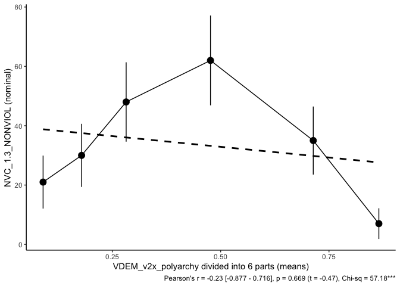

- Installation
- Some R for CSRA students/interns
- Example 1:
equalparts() - Example 2:
U_shape_test() - Some additional functions
csra is a package with functions used by CSRA staff to analyze political events.
Installation
You can install the development version of csra from GitHub with:
# install.packages("devtools")
devtools::install_github("vadvu/csra")Example 1: equalparts()
This is a basic example that shows you how the main (and really powerful) function equalparts() works:
library(csra)
data <- data("dataex") #it's an example panel "long" data that you can use
#Now let's try to analyze how VDEM democracy index affects revolutionary situations
equalparts(
data = datex, #our data
independent = 'VDEM_v2x_polyarchy', #independent var
lag_independent = T, #Should it be lagged? Yes, because political regime can change dramatically during revolutionary year
lag_code = "iso3", #by what unit lag is realized (object from country-year, in our case it is iso3 code)
lead = T, #due to data specific in the top we have earlier data - 2019, 2018, 2017, ..., so `lead` should be used. Otherwise, False is needed
dependent = 'NVC_1.3_NONVIOL', #dependent var
n = 6, #number of equal parts. If n = 10, it is decile analysis, 4 - quartile analysis and etc
bar_or_scatter = 'scatter', #plot type, scatter is more powerful
regline = TRUE, #linear regression line
return_data = FALSE, #we want to see plot, so we do not need data
conf_bars = TRUE, #95%CI
range_bars = FALSE, #range (max-min) of independent var in each unit (for ex., decile)
save_plot = FALSE #we do not want to save plot, so its False
)
The note section is constructed as follows:
1. Pearson’s r (note, $Cor(X,Y) = \frac{Cov(X,Y)}{\sqrt{D(X)D(Y)}}$ that measures linear association)
2. Lower and higher bound of 95% CI of correlation coefficient are in square brackets
3. p-value of a t-statistics that is in the brackets (so, it is P(|t̂|>t0.975(n−1)) ).
4. χ2 statistics with stars indicating the p < 0.01 level of significance (note, in this function * * *p < 0.01,**p < 0.05,*p < 0.1 ).
Plot that is returned by default can be easily changed by ggplot2 syntax. Just save function output and add to it ggplot2 blocks:
library(csra)
library(ggplot2)
data("datex")
plot <- equalparts(
data = datex,
independent = 'VDEM_v2x_polyarchy',
lag_independent = T,
lag_code = "iso3",
lead = T,
dependent = 'NVC_1.3_NONVIOL',
n = 6,
bar_or_scatter = 'scatter',
regline = TRUE,
return_data = FALSE,
conf_bars = TRUE,
range_bars = FALSE,
save_plot = FALSE
)
# for ex., change axis names and theme
plot + xlab("x var name") + ylab("y var name") + theme_grey()
Also table with results can be returned, just set return_data = TRUE:
library(csra)
library(ggplot2)
data("datex")
equalparts(
data = datex,
independent = 'VDEM_v2x_polyarchy',
lag_independent = T,
lag_code = "iso3",
lead = T,
dependent = 'NVC_1.3_NONVIOL',
n = 6,
bar_or_scatter = 'scatter',
regline = TRUE,
return_data = TRUE, #here
conf_bars = TRUE,
range_bars = FALSE,
save_plot = FALSE
)
#> parts Freq_0 Freq_1 means min max prc5 prc95 low95CI
#> 7 1 1592 21 0.09029262 0.008 0.145 0.016 0.143 0.007487174
#> 8 2 1583 30 0.17917483 0.145 0.214 0.149 0.210 0.012005542
#> 9 3 1565 48 0.28196590 0.214 0.362 0.220 0.354 0.021465775
#> 10 4 1551 62 0.47658215 0.362 0.600 0.372 0.588 0.029055460
#> 11 5 1578 35 0.71369994 0.601 0.814 0.613 0.801 0.014588331
#> 12 6 1605 7 0.86508437 0.814 0.926 0.820 0.907 0.001132506
#> high95CI
#> 7 0.018551264
#> 8 0.025192226
#> 9 0.038050654
#> 10 0.047819928
#> 11 0.028809065
#> 12 0.007552358The columns in the table are:
1. parts - equal subsample. In our case - sixtiles.
2. Freq_0 - number of observations with “0” values.
3. Freq_1 - number of observations with “1” values.
4. means - mean of independent variable in specific interval (equal part).
(scatter plot between Freq_1 and means is the basic plot that is pictured earlier).
5. min - min value of independent variable in specific interval (equal part).
6. max - max value of independent variable in specific interval (equal part).
7. prc5 - 5 percentile value of independent variable in specific interval (equal part).
8. prc95 - 95 percentile value of independent variable in specific interval (equal part).
9. low95CI - lower Wald 95% interval (2.5%). Wald CI are:
$$\hat{\pi} \pm z_{a/2}\times \sqrt{\frac{\hat{\pi}\times(1-\hat{\pi})}{n}}$$
where π̂ is an estimated probability, and za/2 = 1.96 due to 95% CI.
10. high95CI - higher Wald 95% interval (97.5%).
Example 2: U_shape_test()
Another function (in the DEMO stage) is the U_shape_test(), which aims to detect hump-shaped forms of links. Currently, only a rare events logistic model has been implemented, although the logic is suitable for all GLMs.
What is U-shape? Simply put, it is the link between variables that is similar to parabola. Usually, it is modeled as polynomial term in the regression equitation, but it’s not the only one option. What is really important in the case of U-shape is that there is only one extreme point (as parabola has). Moreover, the slope of such curve should be positive (negative) on the interval [xmin,xmidpoint] and negative (positive) on the interval [xmidpoint,xmax]. Let’s say we have such equation:
$$y_i = \beta_0 + \beta_1\times x_i + \beta_2\times f(x_i) + \sum_{}^{} \beta_k \times z_{i,k} + \varepsilon_i$$
where βk are coefficients, x is our variable of interest which we assume has a U-shape relationship with y by this part of formula: β1 × xi + β2 × f(xi), zk are control variables, y is our dependent variable and ε is a error term.
Then by definition of the U-shape that described earlier, this inequality should be implied:
β1 + β2 × f′(xi∈[xmin,xmidpoint]) < 0 < β1 + β2 × f′(xi∈[xmidpoint,xmax])
This condition can be reformulated as 2 hypotheses for subsampled models:
$$y_i = \beta_0 + \beta_{lower}\times x_i + \sum_{}^{} \beta_k \times z_{i,k} + \varepsilon_i, x \in [x_{min},x_{midpoint}] (1)$$
and
$$y_i = \beta_0 + \beta_{higher}\times x_i + \sum_{}^{} \beta_k \times z_{i,k} + \varepsilon_i, x \in [x_{midpoint}, x_{max}] (2)$$
And hypotheses are (for inverse U-shape):
+ HL : βlower > 0, for equitation 1
+ HH : βhigher < 0, for equitation 2
This method in the function U_shape_test() operates more complicated in the following way:
1. The full model is estimated on a sample with a polynomial term. Let’s say it is:
$$y_i = \beta_0 + \beta_1\times x_i + \beta_2\times x_i^2 + \sum_{}^{} \beta_k \times z_{i,k} + \varepsilon_i$$ where βk are coefficients, x is our variable of interest which we assume has a U-shape relationship with y, zk are control variables, y is our dependent variable and ε is a error term.
2. Divide the sample into two subsamples - the first being below the midpoint (which is identified as the vertex of the parabola from the polynomial term: $\frac{-\beta_1}{2\times \beta_2}$), and the second being above it.
3. Estimate two models on the two subsamples. A hump-shaped relationship assumes that there is both an ascending and a descending part. So, in order to test a hump, it is necessary to have significant positive and negative coefficients on the first and second subsample respectively.
4. A semiparametric model is estimated without assumptions about the form of the link. The GAM method is used for this purpose. The variable of interest is modelled as a smooth term using cubic splines while other variables are modelled using parametric regressions. In our case it is:
$$y_i = \beta_0 + f(x_i) + \sum_{}^{} \beta_k \times z_{i,k} + \varepsilon_i$$ where f(xi) is a smooth term.
5. ANOVA test between the model with a polynomial term (1st step) and GAM model (4th step). This test is needed to identify whether the polynomial term provides a better or not worse fit than the link found by the GAM splines. If p > 0.1, then the polynomial is considered a good approximation.
6. Bootstrap of a midpoint ($\frac{-\beta_1}{2\times \beta_2}$) for constructing CI. This is optional, but highly recommended stage. Now it works unstable in the function…
7. This is the final stage.
IF the polynomial term is significant (1st stage) AND there are significant opposite signs on subsamples (2nd stage), AND the GAM term is significant in terms of EDF significance (4th stage), AND the ANOVA test’s p-value is greater than 0.1 (5th stage), THEN there exists a hump-shaped or U-shaped link between the variables. In this case, the polynomial term is suitable for approximating such a relationship.
This approach is based on 2 papers that define the overall strategy for identifying a U-shaped relationship with continuous data (i.e. with a linear regression model):
- Lind, J. T., & Mehlum, H. (2010). With or without U? The appropriate test for a U‐shaped relationship. Oxford bulletin of economics and statistics, 72(1), 109-118.
- Simonsohn, U. (2018). Two lines: A valid alternative to the invalid testing of U-shaped relationships with quadratic regressions. Advances in Methods and Practices in Psychological Science, 1(4), 538-555.
library(csra)
data("datex")
U_shape_test(
data = datex, #our data
dep = "NVC_1.3_NONVIOL", #dependent variable
ind = "VDEM_v2x_polyarchy_lag", #independent var
cnt = c("UN_Median_Age", "UN_Total_Population_log"), #control vars
boot = "none", #bootstrap for middle point analysis - we do not use it in an example
n = 1000, #number of bootstrap deaws
const = T, #We need constan in a model
HC = T, #type of SE
plot = T,
tab_save = FALSE #we do not need to save regression table
)
#>
#> ======================================================
#> Dependent variable:
#> ---------------------------
#>
#> ------------------------------------------------------
#> VDEM_v2x_polyarchy_lag 8.544***
#> (1.328)
#> I(VDEM_v2x_polyarchy_lag2) -10.989***
#> (1.461)
#> UN_Median_Age 0.044***
#> (0.011)
#> UN_Total_Population_log 0.351***
#> (0.045)
#> Constant -8.941***
#> (0.519)
#> ------------------------------------------------------
#> N 8400
#> AIC 1768.79
#> U-shape test:
#> Extremum 0.39
#> Xlower 2.49 (p = 0.0065)
#> Xhigher -5.62 (p = 0)
#> GAM edf 3.16 (p = 0)
#> AIC glm - AIC gam -2.84
#> ======================================================
#> Note: *p<0.1; **p<0.05; ***p<0.01
Some additional functions
Goldstone regime type classification
Goldstone et al. (2010) proposed new regime type classification that is based on Polity-V project. This approach distinguishes five types of political regimes based on two indicators of the Polity database – EXREC (Executive Recruitment) and PARCOMP (Competitiveness of Political Participation). Function goldclass provide you with ability to recode Polity-V data into 5-class variable:
1. full autocracy
2. partial autocracy
3. partial democracy
4. partial democracy with factionalism
5. full democracy
polity5data$goldstone_regime <- goldclass(exrec = polity5data$exrec, parcomp = polity5data$parcomp)